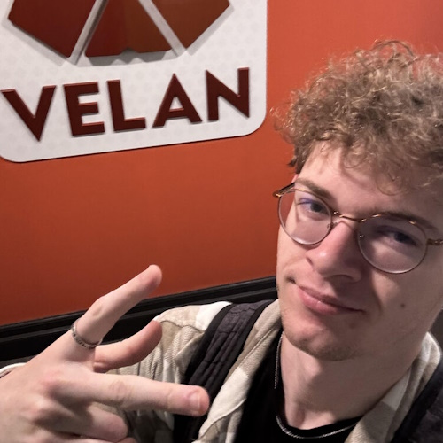

Specialization
Deep expertise in shaders, materials, lighting, VFX, and performance, not surface-level generalist work. Every engagement leans on years of technical art and graphics programming on real game projects.
Freelance technical art and graphics support for games and interactive projects. Available for focused deliverables or ongoing collaboration; whatever your project needs.
ShaderForge is built for teams that want a dedicated graphics partner, not a generic freelancer listing.
Deep expertise in shaders, materials, lighting, VFX, and performance, not surface-level generalist work. Every engagement leans on years of technical art and graphics programming on real game projects.
Solutions shaped around your engine, art direction, and production pipeline. You get work that fits how your team actually builds, not one-size-fits-all templates.
Clear communication, dependable timelines, and deliverables ready to drop into your milestone schedule. Documentation and handoff are treated as part of the job, not an afterthought.
Honest scoping, transparent progress, and code and art you can trust in your project. If a request is not the right fit, you will hear that upfront no overpromising to win the job.
A graduate of Champlain College's Game Programming Curriculum. Avid Competitive Gamer. Volleyball Lover.
I have had the privileged experience working on amazing teams, from AA to indie in shaders, tools, performance, cinematics on some incredible projects. If you are interested in getting freelance work from ShaderForge or any of my other work, contact me below or check out some of my other projects on this website!
